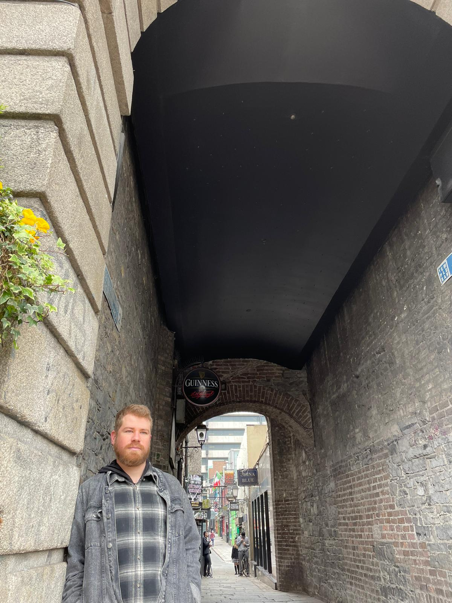

Nasci em Porto Alegre em 27 de abril de 1994 e fui criado em Canoas. Atualmente me dedico aos estudos de Desenvolvimento Web na Trybe, Análise e Desenvolvimento de Sistemas na faculdade Estácio, e escrita criativa, e estou escrevendo um romance.
Para mais detalhes sobre o livro clique aqui.